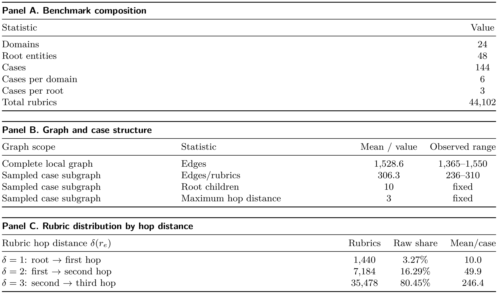
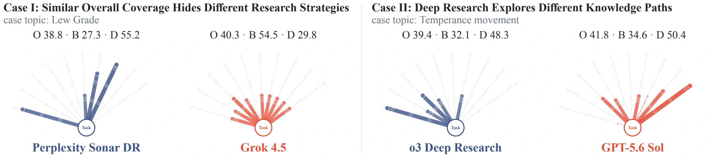
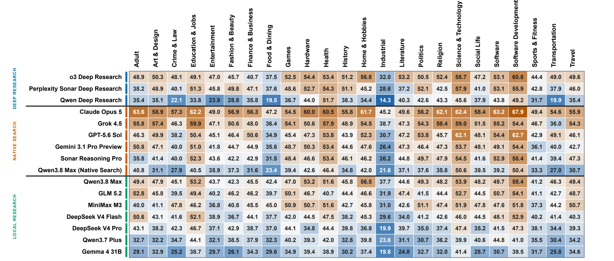
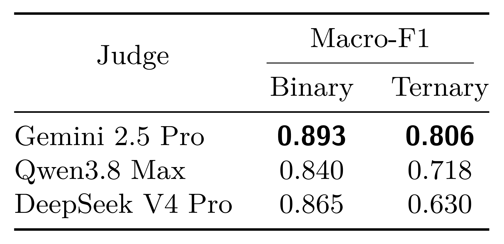
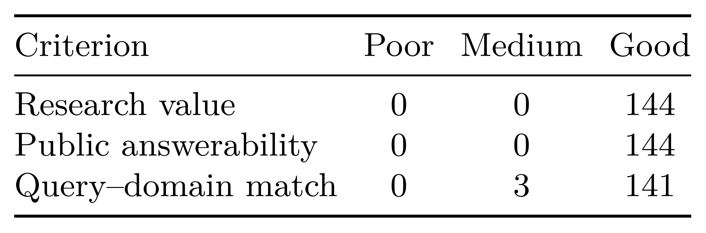
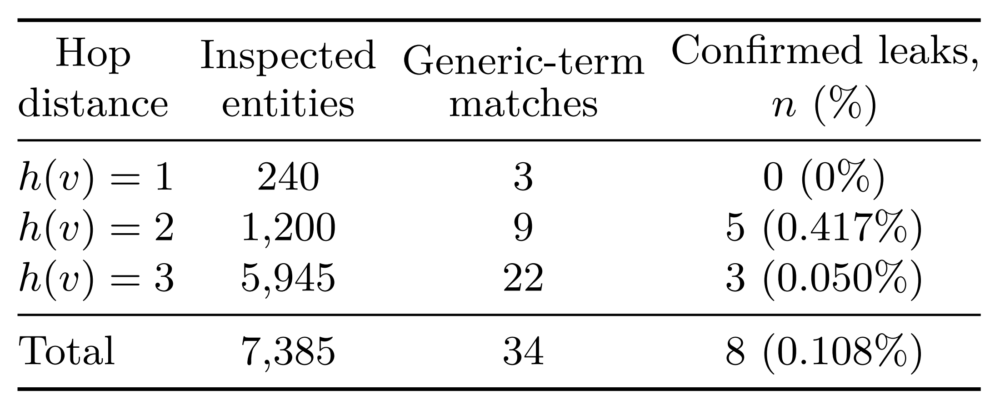
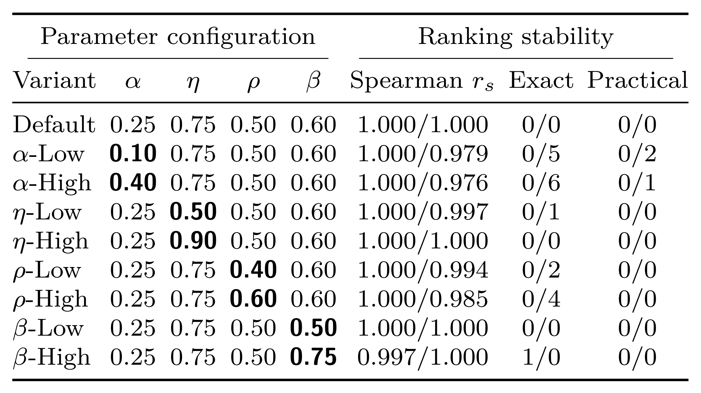

0.893
Judge vs. human labels
Binary Macro-F1 of Gemini 2.5 Pro on 3,695 human-reviewed rubric judgments from 12 reports. The other judges reach 0.865 (DeepSeek V4 Pro) and 0.840 (Qwen 3.8 Max). Binary scoring beats ternary for all three.

A Knowledge-Centric Benchmark for Professional Deep Research Agents
Video could not play. Open the video directly or try again with the player controls.
A deep research report should be judged by the knowledge it covers, along two axes: breadth across research directions and depth along chains of related knowledge.
DRBench Pro builds both the research query and its hidden rubrics from the same Wikipedia knowledge tree, so each rubric is one relation in that tree. Judgments are aggregated over the tree, so two reports that satisfy the same number of rubrics can still score differently in breadth and depth.
Method
Root entity · Games domain
Roguelike
Wikipedia article, one of 48 roots (two per domain, 24 domains)
Subgraph sampling
Claude Opus 4.8 picks three groups of 10 complementary branches. The groups share no branch.
S1S2S33 cases per root, 144 in total
Case scope S1
The root plus 10 complete branches. Each branch is one research direction, and paths inside it are knowledge chains (up to 3 hops).
Research query sent to agent
“I’m trying to understand the origins of the roguelike video game genre and would love a well-researched history that goes beyond just listing famous titles. I’m especially curious about how the genre actually came together in the late 1970s and early 1980s …”
Rubrics hiddenone per edge
Input
Only the query
Agent
o3 Deep Research
Report 2026-07-21
Judge · Gemini 2.5 Pro
Each rubric gets Satisfied, Partially Satisfied or Not Satisfied. Only Satisfied counts as covered.
Verdicts on the report
Breadth 0.00
B(v) = β·x(v) + (1−β)·mean B(child)
B = mean over the 10 directions
Depth 0.00
D(v) = α·x(v) + (1−α)·RankAgg(D(child))·[η + (1−η)·x(v)]
D = RankAgg over directions (ρ-decayed)
Overall 0.00
S = √(B · D)
Paper defaults: β 0.60, α 0.25, η 0.75, ρ 0.50. Values are computed on this simplified tree, not reported results.
Same tree, same 14 of 47 rubrics satisfied
Report A Broad, shallow
Report B Focused, continuous
Report C Distributed, uneven
Flat counting gives all three 29.8%. The tree-aware metrics separate them. Reports A–C are hypothetical.


Benchmark
Rubrics by hop distance
The aggregation is normalized at every node, so the large number of hop-3 rubrics does not by itself give them more weight.
The 48 root entities

Results
Claude Opus 5 leads on all three metrics (57.04% overall). The breadth and depth rankings cross: Grok 4.5 is relatively stronger in breadth, o3 Deep Research in depth.
All domains · 144 casesScores in %, ranked on unrounded values. Overall is averaged per case, so it is not √(mean B · mean D).
Deep Research Systems are end-to-end research products with their own planning, evidence gathering and synthesis.
Native Search LLMs use the provider's built-in web search during generation, without a separate deep research workflow.
Local Research Framework runs backbone LLMs on a fixed Wikipedia snapshot (enwiki-20260701-v1) with the same Search/Open tools, workflow and budget.

Domains
Each cell averages six cases. Averaged over all agents, overall coverage is highest in Software Development (53.69%), Science & Technology (52.36%) and Health (50.10%), and lowest in Food & Dining (35.45%) and Industrial (28.58%). Claude Opus 5 leads in 23 domains, and o3 Deep Research leads in Literature.
· boxed = best agent in the domain

Validation
0.893
Binary Macro-F1 of Gemini 2.5 Pro on 3,695 human-reviewed rubric judgments from 12 reports. The other judges reach 0.865 (DeepSeek V4 Pro) and 0.840 (Qwen 3.8 Max). Binary scoring beats ternary for all three.
0.751
Mean Kendall τb for overall coverage against three experts' ratings of 72 reports (Spearman 0.833); flat coverage gets 0.508. Breadth: 0.696, depth: 0.727.
0.108%
8 confirmed leaks in 7,385 query–entity comparisons (24 cases, one per domain), none at the first hop. Another 34 generic-word overlaps were excluded.
144 / 144
All queries were rated Good for research value and public answerability. For query–domain match, 141 were Good and 3 Medium, all because of natural cross-domain overlap.
≥ 0.976
Spearman correlation with the default ranking under eight parameter perturbations: at least 0.997 for breadth and 0.976 for depth, with at most 2 practical reversals out of 120 agent pairs.




Quick start
The benchmark ships in the repository as JSONL. Give your agent queries.jsonl only, and keep cases.jsonl (rubrics and trees) for the evaluator. Python 3.11+ on Linux or macOS.
1Install and run the offline example
git clone https://github.com/ZJU-REAL/DRBenchPro.git
cd DRBenchPro
python3 -m venv .venv && source .venv/bin/activate
python -m pip install -e .
drbenchpro verify-data --registry data/registry.json
drbenchpro metrics --cases examples/evaluator_case.json \
--scores examples/rubric_scores.jsonl --output outputs/example-metrics.jsonThe synthetic example returns Breadth 0.84, Depth 0.4375 and Overall 0.6062. It needs no credentials or network.
2Generate reports and configure the judge
# one line per report in my-reports.jsonl
{"case_id":"d01_adult__r05_fanny_hill__s01","system_id":"my-model","report":"..."}
cp .env.example .env # JUDGE_API_KEY, JUDGE_BASE_URL, JUDGE_MODEL
source .envAny OpenAI-compatible Chat Completions endpoint works. The paper's judge is Gemini 2.5 Pro.
3Evaluate and compute the metrics
drbenchpro validate-reports --cases data/benchmark/cases.jsonl \
--reports my-reports.jsonl --require-full
drbenchpro evaluate --cases data/benchmark/cases.jsonl \
--reports my-reports.jsonl --output outputs/my-evaluation
drbenchpro metrics --cases data/benchmark/cases.jsonl \
--scores outputs/my-evaluation/scores.jsonl \
--output outputs/my-evaluation/metrics.jsonOnly score 1 (Satisfied) counts as covered. Metrics are reported on a 0–1 scale.
To compare backbone LLMs under controlled conditions, the optional framework runs a fixed Planner → Research Units → Gap check → Synthesis workflow over a frozen English Wikipedia snapshot (enwiki-20260701-v1). Every backbone gets the same Search/Open tools and budget, and provider web search is disabled.
Framework imageDownload & runFramework guideEvaluation guide

Cite
@article{huang2026drbenchpro,
title = {DRBench Pro: A Knowledge-Centric Benchmark for Professional Deep Research Agents},
author = {Huang, Han and Yan, Yuchen and Wu, Xingyu and Li, Yijun and Deng, Chao and Liu, Jie and Ma, Jin and Shen, Yongliang},
journal = {arXiv preprint arXiv:},
year = {2026}
}